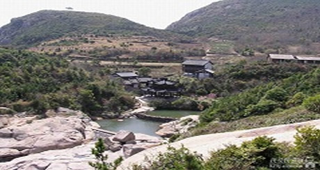

坐在酒吧靠窗的座位上，听着海浪拍打海岸的声音，这是田宏最大的享受，他说自己已经是一个东极人了。
一次偶然的机会，田宏来到了东极。他被小岛恬静美丽的风景深深吸引，于是决定，在这儿开一间酒吧。5年多过去了，田宏的酒吧已经渐渐有了名气，成为东极一道小小的风景，而东极也从一个陌生的岛屿，慢慢变得繁华热闹。
相比中国的其他三个新区，旅游是舟山群岛新区的一大优势，舟山市旅游委员会相关负责人对记者说，他们将全面推进舟山群岛海洋旅游综合改革试验区建设，努力把舟山群岛打造成为我国海岛旅游的示范基地、浙江旅游经济发展的重要引擎、浙江海洋经济发展战略的有力支撑。
今天，首届中国（舟山群岛）国际游艇展在舟山朱家尖樟州湾举办。与其他游艇展不同，本届游艇展将变静态展出为动态体验，展会期间还将有一系列丰富多彩的配套活动。
“首届中国（舟山群岛）国际游艇展对于舟山成为游艇天堂和高端旅游目的地，将起到极大的促进作用。与此同时，在浙江舟山群岛新区建设过程中，舟山国际游艇展将为引领时尚海洋、自在生活提供更多的灵感。”有关负责人说。
目前，舟山的阿尔法普陀国际游艇会一期50个游艇泊位将在展会前建成投入使用，朱家尖国际邮轮专用码头也将开工建设。舟山市还将在桃花、东极、白沙等地陆续建造游艇专用泊位。
如今，舟山已成为越来越多人向往的地方，每次到舟山，都能看到很多来自全国各地的游客，而相比全国其他三个新区，旅游也是舟山的一大优势。
舟山市旅游委员会副主任方维介绍，去年，舟山共接待境内外游客2139万人次，同比增长22%；其中入境游客25.68万人次，同比增长14.9%；全市实现旅游收入142.04亿元，同比增长21.9%。
方维说，通过多年的努力，舟山的旅游品牌有了很大的提升。不仅增强了普陀山品牌辐射力，还把朱家尖等重点旅游岛屿作为试验区建设的核心区域，以核心区域建设带动全舟山市的旅游发展。
方维介绍，他们在基础设施方面，加快推进以旅游交通集散中心为主体的旅游门户建设；在规划方面，已抓紧编制功能区块详细规划，并协同研究策划普陀山门户外迁方案以及客源限流方案；在项目开发方面，把朱家尖作为邮轮、游艇、高尔夫等旅游新业态、新产品开发的试验基地和先行先试区，目前各项工作正在全力推进，并已初显实效。
同时，他们积极加快推进在普陀桃花岛、岱山秀山岛、嵊泗泗礁岛等地旅游综合体的建设步伐，形成“大景区、大市场、大开发”的格局。
那么，成立舟山群岛新区后，舟山的旅游业又会有一个怎样的发展新思路呢？
“成立舟山群岛新区，将对舟山的旅游业带来很大的促进和拉动，我们将以创建中国旅游综合改革试点城市和建设舟山群岛海洋旅游综合改革试验区为主线，充分发挥普陀山辐射作用，重点打造以“朱家尖自在文化体验区”为核心的普陀旅游金三角，把舟山群岛打造成为国际著名的佛教旅游胜地和群岛型海洋休闲度假旅游目的地。”方维说，眼下要做的，就是按照旅游营销统分结合的原则，统一资金、统一形象，区分内容、划分区域，加大宣传促销力度。“包括城市形象的专题营销、特色产品的专题营销，旅游产品的网络营销。而目前的营销重点还是在长三角地区。”
对于记者着重采访的东极，方维认为，东极具有舟山旅游的代表性，会是舟山旅游的一个方向。
舟山有很多像东极这样的小岛，方维说，他们很重视海洋海岛文化的保护和挖掘，将规划开发一批具有“石墙青瓦”等典型海岛特征和浓郁海洋文化的民宅群或村落，结合新渔农村建设，建设完成定海区大鹏岛、茶人谷，普陀区朱家尖筲箕湾、桃花乌石子、东极庙子湖、白沙，岱山县凉峙、双合、桃树湾，嵊泗县田岙、会城岙、枸杞大王等一批经典海岛渔农村。完善渔家精舍、特色海鲜餐馆、民俗文化演绎场所等旅游设施，改造提升“渔（农）家乐”，丰富岛村休闲旅游产品。
同时，舟山还将实施旅游目的地国际化战略，加强与相关职能部门的协作，争取各方支持，谋求政策突破，积极接轨国际市场。一是抓住国家放开对低空航权限制的机遇，积极寻求合作伙伴，选择合适区域发展水上飞机和岛际直升机等旅游项目；二是结合国际邮轮码头建设和港口开发，在朱家尖、洋山等区域规划设立免税商店，提升舟山旅游国际化程度；三是启动国际游客购物离岛退税政策的研究，分阶段逐步推进。
曾经，舟山有文人发表过一篇题为《舟山，再造一个香港如何》的文章，但那时只是人们的一种美好希望，很多条件并不具备。如今，舟山群岛新区的成立，也许将会成为这个美好希望的强劲支撑。
一次旅游后，上岛开酒吧
人物：酒吧老板田宏，上海人
随机走进东极的一家酒吧，因为不是营业时间，老板田宏正静静地坐在窗边喝茶。
田宏是上海人，2005年10月，也是从网上看到了有关东极的消息，他和老婆一起来这里游玩。田宏记得，当时的船还是小船，要开4个小时。
“我一到这里，就被深深吸引，当时就想，能不能来这里生活？”田宏说，他后来想到在这里开间酒吧。
第二年，田宏租了一幢房子，花了三个多月时间装修，做成了一个很有海岛特色的酒吧。酒吧内的隔档是用渔网做的，墙上还挂着很多渔民画。
“当时来东极旅游的人并不多，酒吧生意也相对淡一些，这几年旅游的人越来越多，生意也一年比一年好。”田宏说。
如今，田宏除了开酒吧，还开起了客栈，并且还做帐篷、渔具出租。去年，他还买了一艘快艇，两艘钓鱼船，开辟了海上旅游项目。
对于舟山群岛新区的建设，田宏也是充满期待。“舟山群岛有很多个像东极这样的小岛，我想在更多的岛上开连锁店，并且扩大海上游乐项目，做成一个舟山旅游的品牌。”
渔家乐让她留在了小岛
人物：渔家乐老板吴爱琴，本地居民
“本来，我们是想离开东极，到沈家门和孩子们一起生活的。2003年一次偶然的机会，我遇到了几个游客，他们到处找地方住，我和他们说‘要不住我家吧。’从那以后，我就想到在这儿开一家渔家乐。”说起留在东极的原因，吴爱琴自己都觉得很戏剧性。她也因此成了东极岛上第一个开渔家乐的居民。
东极镇政府相关负责人介绍，以前，东极四个岛屿有好几万居民，后来随着“小岛迁，大岛建”的实施，很多居民都搬到了舟山市区，到现在，这里在册居民只剩下6000多人，常住的只有2500多人。“随着旅游业的发展，东极的常住居民数在最近几年得到了稳定，一些曾经出去的居民还回到了东极从事旅游业。”
几年过去了，来旅游的人越来越多，吴爱琴的渔家乐也从原来简易的渔家小房变成了一个有两层楼高、10个带独立卫生间的渔家乐旅社，另外，她还开起了餐馆。
“我希望来我们这儿旅游的人越来越多，等我老了，我还想把儿子叫回来继承我的事业。”吴爱琴笑着说。
和吴爱琴一样，很多当地人因为从事了旅游业，而选择了继续坚守在小岛上，他们的日子也变得越来越红火。
据东极镇旅游办统计，2005年，全镇的游客是3.41万人次，旅游收入是1023万元，到去年，旅客已增长到8.85万人次，旅游收入达5310万元。
开着游艇出海去
人物：某游艇俱乐部董事长李遐，宁波人
在舟山，平民化的旅游项目已不足为奇。眼下，越来越多的高端旅游项目正在发生日新月异的变化。其中，宁波人李遐开的普陀国际游艇会就是其中之一。
这个游艇会设在舟山普陀区朱家尖，与普陀山近在咫尺，三面环山一面纳海。
在游艇会所拥有的朱家尖阿尔法游艇码头，记者看到，几艘豪华游艇正停泊在码头上。
李遐说，首届中国（舟山群岛）国际游艇展将在今天（8日）开幕，届时，将会有70多艘游艇参展。
游艇会除了租售游艇，还在周边开发了很多别墅和酒吧等设施。“用不了多久，一些高端游客，就可以白天自驾游艇去东极岛，晚上住回朱家尖的别墅了。”李遐说。
对于舟山群岛新区的建设，李遐认为，这对他们而言是一个很好的机遇。“舟山群岛新区建设，肯定会吸引大量的目光，这其中的一些高端人士，将会是游艇俱乐部潜在的优质客源。”李遐认为，新区的建设，将会在舟山软硬件设施方面有更多的发展，这更有利于吸引游客.